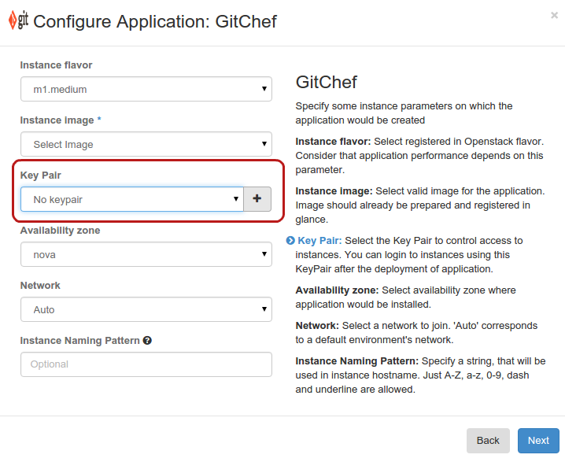

Log in to murano-spawned instance¶
After the application is successfully deployed, you may need to log in to the virtual machine with the installed application.
All cloud images, including images imported from the OpenStack Application Catalog, have password authentication turned off. Therefore, it is not possible to log in from the dashboard console. SSH is used to reach an instance spawned by murano.
Possible default image users are:
- ec2-user
- ubuntu or debian (depending on the operating system)
To log in to murano-spawned instance, perform the following steps:
Prepare a key pair.
To log in through SSH, provide a key pair during the application creation. If you do not have a key pair, click the plus sign to create one directly from the Configure Application dialog.
After the deployment is completed, find out the instance IP address. For this, see:
- Deployment logs
Detailed instance parameters
See the Instance name link on the Component Details page.
To connect to the instance through SSH with the key pair, run:
$ ssh <username>@<IP> -i <key.location>
{kind=link}
{kind=link}
{kind=link}